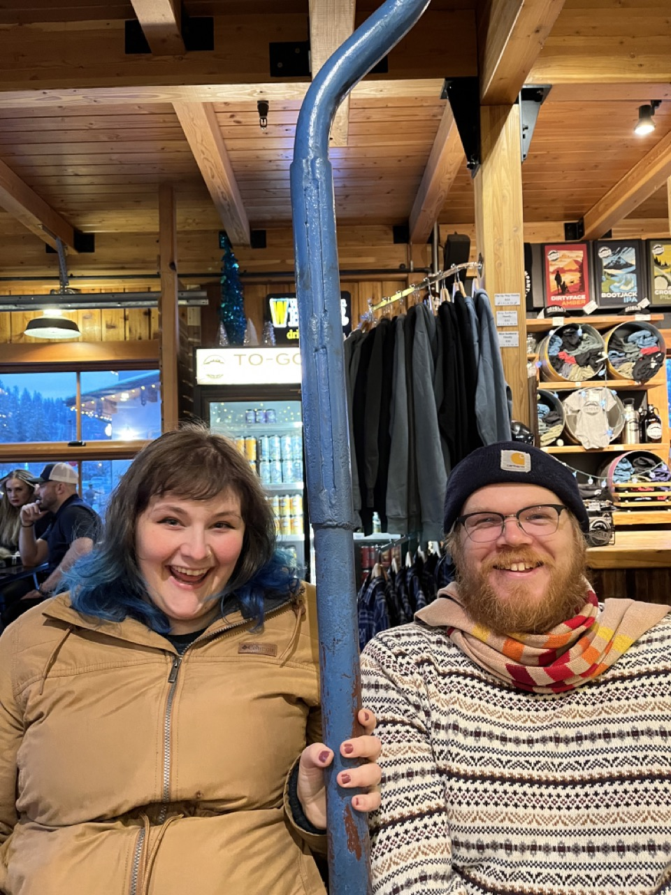
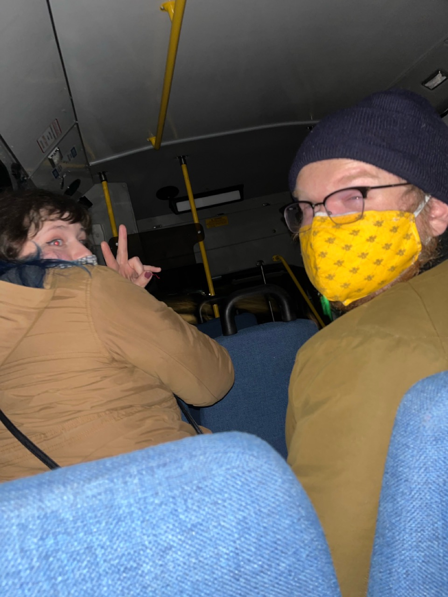
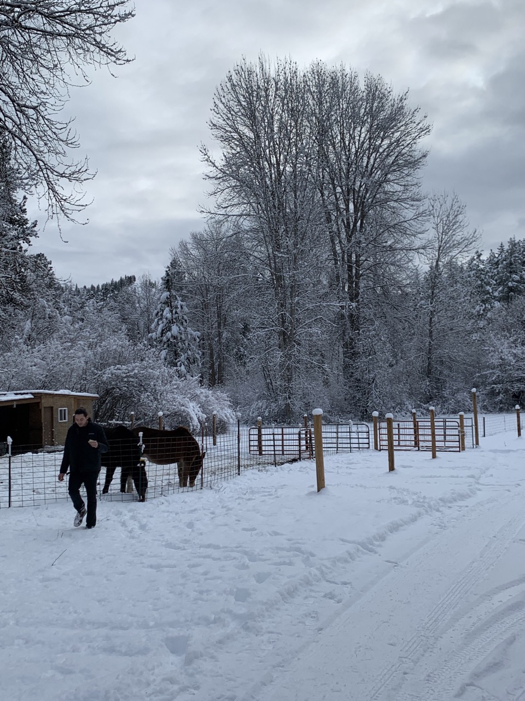
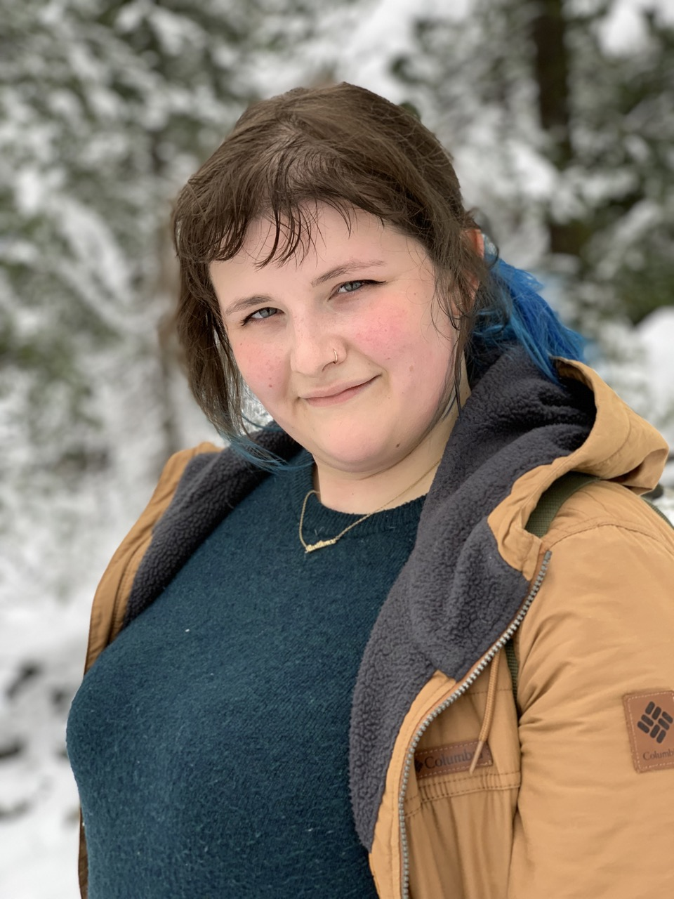
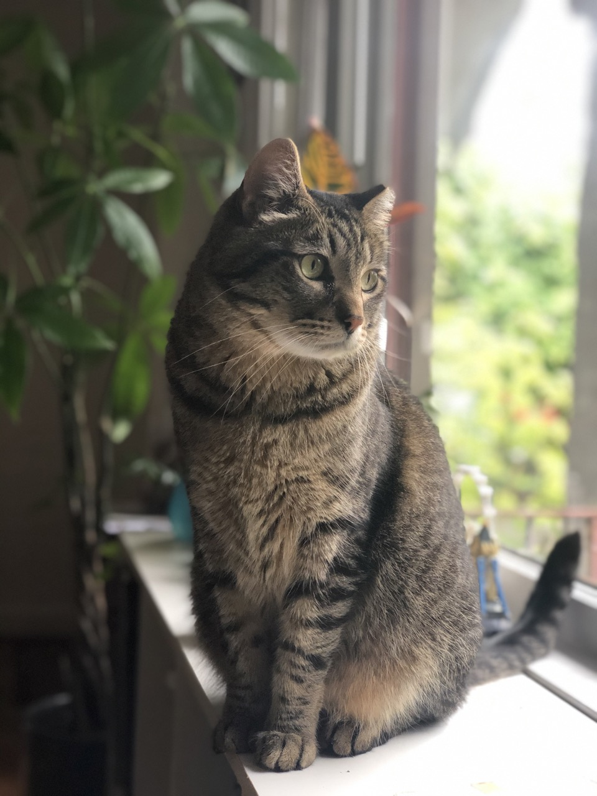
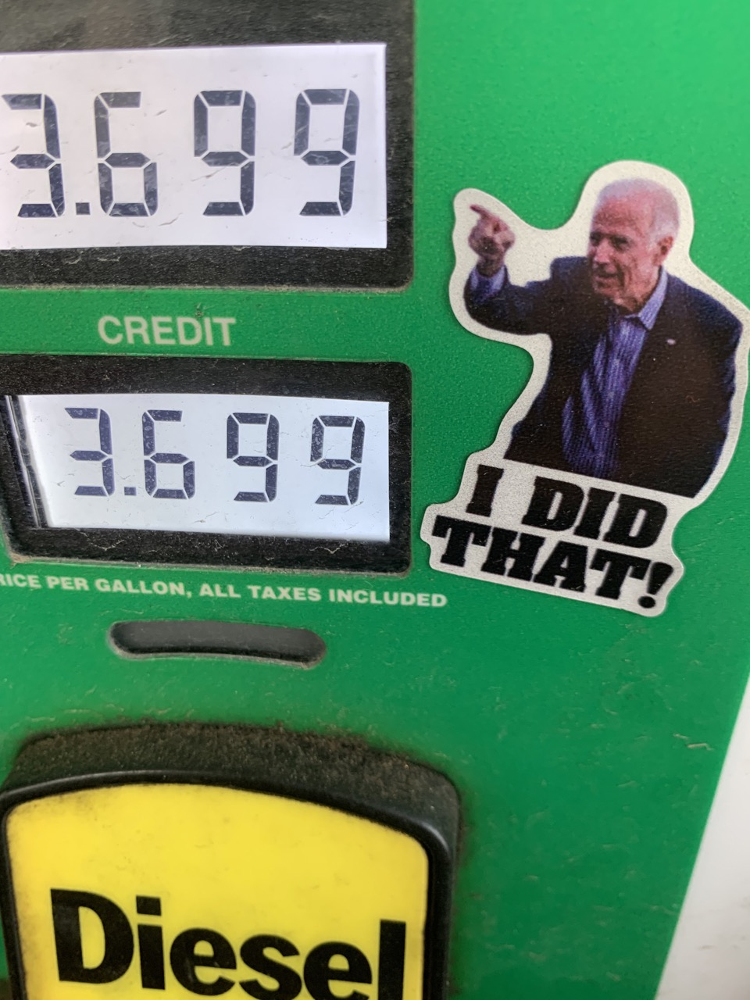
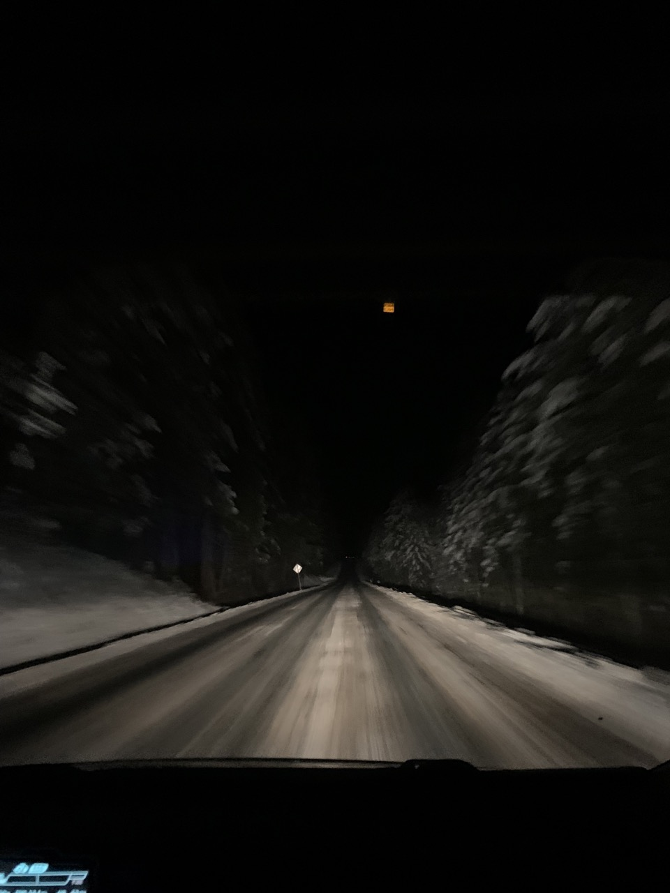
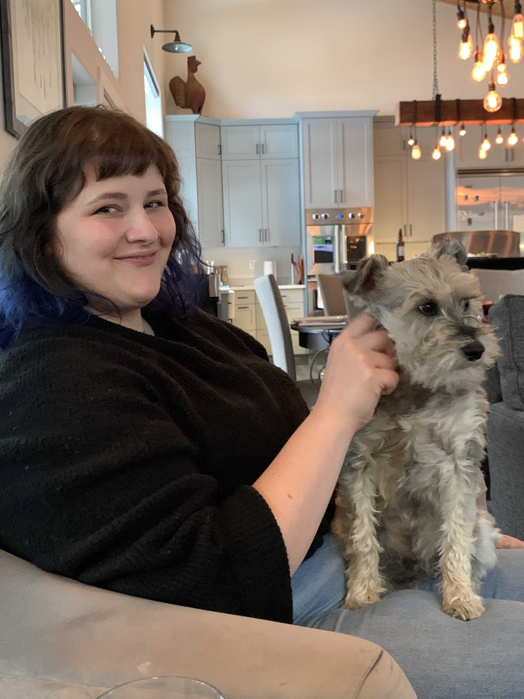
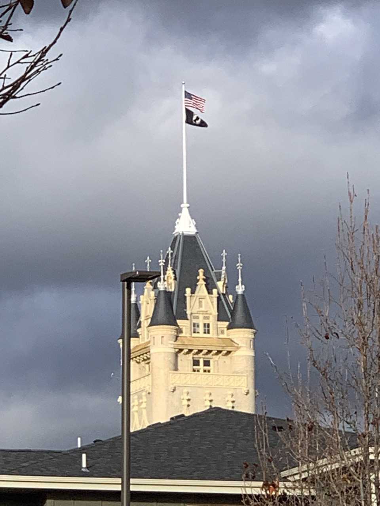

Welcome to our website! We're happy you're here. üåû
Yellowstone Photo Log ~ July 2022
After two long years of waiting, for obvious reasons, Jaimie and I finally got to go on a trip to Yellowstone
National Park. The natural beauty of the American West is stunning, and Yellowstone is like a crown jewel.
Yellowstone is teeming with things to do and see. We stayed four days and still only fit in a small fraction of
the sights to view. I think I was on a phone diet, so I didn't take many photos. We also decided to camp, on our
way to and from the park, which turned out sweaty, but great! At the park, Cathy and James managed to book us four
nights, two nights at the Old Faithful Inn, and two at the Cabins behind The Yellowstone Hotel.
Our first night we stayed at the Bruneau Dunes outside of Boise in southern Idaho. Needless to say it was hot,
92F at 10:30PM üò• Besides being a bird sanctuary, and sporting a big sandy dune, the park had a building to
house a huge 15 foot tall telescope. We sat through a movie about light pollution, and got to see some stars,
and galaxies! üåÉ We declined the 'Scorpion Walk' ü¶Ç Apparently they were abundant in the area.
A random snapshot of the stunning scenery. The weather was a little warm, but we couldn't complain.
Driving around a bend seeing the Tetons was exhilarating after driving all day. The mountains have a surreal
beauty that is captivating.
Unfortunately it was a little smokey, but nevertheless they are still impressive.
This was the view a short walk from our campsite at Signal Mountain.
One of the first, of many, many, hot springs we saw throughout the trip.
Most of the hydrothermal features had unique names. Our favorite one was The Hook n' Cook. It was named because
fishermen would dip their catch, still on the rod, in the hot water to instantly boil it.
Jaimie was a little thirsty, it was pretty hot outside.
The gloopy ones were the best! They're called Mudpots or Paint Pots.
Jaimie and James! Thankfully we didn't fall off the walkway. ü´†
Another beautiful sunset that probably smelled like stinky farts. Sulphur!
Some breathtaking views of the Grand Canyon of Yellowstone.
The real star of the show, the American Bison. We saw them all over, so a little too close for comfort.
Bison make shallow dirt pits called wallows that they use to stay clean and cool.
Near the end of our trip, the Huck fam taking a break to gaze at Yellowstone Lake
Even at the hotels, Elk come to remind us it was theirs first.
Montana is a land of strange laws, and combined casino/liquor stores
We camped another night by a lake in Montana before we headed for home.
Overall Yellowstone was amazing, and we hope to return soon.
Leavenworth Photo Log ~ December 2021
This December we got the chance to take a trip to the lovely Bavarian themed town of
Leavenworth, WA. We were invited by our friends, Jacquie & Johnny, who we met through Jaimie's
grad program at Lewis & Clark (2 years left ü•≤ until Jacquie & Jaimie are school psychologists!).
Needless to say we had a wonderful time drinking beer and enjoying the snow ☃️ during such
a festive time of year.
The Yakima Foothills covered in a nice layer of snow. Luckily the roads
getting to Leavenworth weren't icy.
A Quaker named Sam Hill built this replica
of Stonehenge in the Columbia River Gorge as
a memorial to WWI veterans. Weird!
We were apparently rocking out at Icicle Brewing. It was a big hit, we ended up going their twice, mostly for
the ski lift seat.

The ski lift seat! ⛷ It was bolted into the ceiling, and you could swing around while you drank your beer.

The only taxi in town was an airport shuttle bus that was moonlighting as a taxi. We made it home in one piece,
but we missed our flight üòõ.
A view of the moon and the night sky, after our night exploring the town.

Our 'neigh'-bors... two friendly hinnies.
We rented snowshoes from the local shop and went out to Icicle Creek. It was beautiful, and snowy.
Although I got a little sweaty climbing up a big hill üòÖ

Jaimie looking cute, as usual, even after a hike!
Johnny, doing his best to keep warm, while we wandered around town.
We just escaped a big blast of snow on the way home, but the view of the hills was still fantastic.
Aslo's Senior Photo

Spokane Photo Log ~ November 2021
Jaimie and I recently went to visit my family in Spokane.
We had a great time seeing my sister Jessie and her two dogs Dunkel and Odin,
as well as getting to spend more time with Jessie's husband Nolan, and Nolan's parents Juanita, and Craig. Spokane
is a beautiful city
this time of year, and I feel like Jaimie and I took full advantage!

A little local political flavor at the Shree's Gas Station in George, WA (hahah)Your's truly driving across the scenic Columbia River Plateau

Hit a little patch of snow on the way over a mountain, through the backwoods of Northeastern
Washington

Dunkel and Jaimie chilling before Thanksgiving Dinner. We had a great time hanging with our nephews,
and enjoying the snowy cold air in Chewelah. Jaimie looking beautiful in the sun, doing what we do best, drinking delicious beers at Iron Goat
BrewingView from our hotel room!!! That's the pavilion on the Spokane River that runs through downtown
Spokane

Here is the home of the Little Prince of Spokane who gives a name to each cloud as it floats by.
A night on the town, at No-Li Brewing, a Spokane institution.This is our local haunt. We both had apartments here while we lived in Spokane. The gravel lot kitty
corner from us became a cool plaza with tons of breweries. Go Figure!